DNS服务
Table of Contents
V2Ray 内置的 DNS 服务，其解析的 IP 往往先是用来匹配路由规则
如果配置不当，请求会在 DNS 请求上耗费一定时间
路由 routing 的 domainStrategy 的几种模式都跟 DNS 功能密切相关，所以在此专门说一下：
- AsIs ，当终端请求一个域名时，进行路由里面的 domain 进行匹配，不管是否能匹配，直接按路由规则走
- IPIfNonMatch , 当终端请求一个域名时，进行路由里面的 domain 进行匹配，若无法匹配到结果，则对这个域名进行 DNS 查询，用结果的 IP 地址再重新进行 IP 路由匹配
IPOnDemand , 当匹配时碰到任何基于 IP 的规则，将域名立即解析为 IP 进行匹配。
可见，AsIs是最快的，但是分路由的结果最不精确；而IPOnDemand是最精确的，但是速度是最慢的
流程

基础
{
"dns": {
"servers": [
"1.1.1.1",
"localhost"
]
}
}
DNS 模块的基础使用并没有什么特别复杂的地方，就是指定一个或几个 DNS 服务器，v2ray 会依次使用（查询失败时候会查询下一个）
- 其中 localhost 的意义是特殊的，作用是本地程序用 系统的 DNS 去发请求，而不是 V2ray 直接跟 DNS 服务器通信，这个通信不受 Routing 等模块的控制
进阶
客户端分流
DNS 服务是可以用来分流的，大致思路是，”哪些域名要去哪个 DNS 服务器解析，并希望得到属于那里的 IP 地址“。 配置的规则跟路由模式中用的是相似的
{
"dns": {
"servers": [
{
"address": "119.29.29.29",
"port": 53,
"domains": [
"geosite:cn"
],
"expectIPs": [
"geoip:cn"
]
},
{
"address": "8.8.8.8",
"port": 53,
"domains": [
"geosite:geolocation-!cn",
"geosite:speedtest",
"ext:h2y.dat:gfw"
]
},
"1.1.1.1",
"localhost"
]
}
}
上面的配置思路这里解释一下： 国内域名匹配到 domains 里面，使用 119.29.29.29 进行查询，并期待得到国内的 IP 地址； 如果得到的地址并不是国内的，则进行下一个 DNS 服务器进行查询，并使用新的结果 不是国内的域名会匹配到第二个配置， 使用 8.8.8.8 进行查询，这次不需要期待特别的 IP 了，可直接使用返回的 如果以上过程都有问题，则直接查询 1.1.1.1，再不行让本地 DNS 试试吧
服务器配置
服务端的 DNS 一般无需复杂配置。如果配置了，应注意freedom的 outbound 配置了"domainStrategy"为 UseIP | UseIPv4 | UseIPv6 几种的时候才会使用内置 DNS，默认的AsIs是交给操作系统去解析和连接
{
"dns": {
"servers": [
"https+local://1.1.1.1/dns-query",
"localhost"
]
}
}
新版本 4.22.0+ 后加入的 DOH 功能，部署在服务器端时候可以简单使用
对外开放 v2ray 的 DNS 服务
Kitsunebi 的作者在 《漫谈各种黑科技式 DNS 技术在代理环境中的应用》 中介绍了通过Dokodemo入站协议和DNS出站协议开放 v2ray DNS 的方法 可以充分发挥 v2ray 内置 DNS 的强大能力，例如让系统其它不经代理的联网程序获得 DNS 级别广告过滤的能力，以及在透明代理中接管系统 DNS 等
该方法的核心思想是使用 Dokodemo入站 协议接收 DNS 请求流量 ， 转发 至 DNS出站协议 。而DNS出站协议会 拦截 Type A 和 Type AAAA 的 DNS 查询 并 交由 v2ray 内置 DNS 处理 ，从而返回查询结果
除此之外的查询流量，会根据Dokodemo的配置发送至目标 DNS 服务器
{
"inbounds": [
{
"tag": "dns-in",
"port": 53,
"protocol": "dokodemo-door",
"settings": {
"address": "8.8.8.8",
"port": 53,
"network": "tcp,udp",
"userLevel": 1
}
}
],
"outbounds": [
{
"protocol": "dns",
"tag": "dns-out"
}
],
"routing": {
"rules": [
{
"type": "field",
"inboundTag": [
"dns-in"
],
"outboundTag": "dns-out"
}
]
}
}
然而，这样配置存在一定问题。对于非Type A和Type AAAA的 DNS 查询，v2ray 将会直连转发至dns-in中所设置的目标 DNS 服务器 而当这个域名被污染时，返回的自然是被污染的结果；如果希望 v2ray 内置 DNS 承担 DNSCrypt-Proxy 的作用，这样无疑会导致 DNS 查询内容的泄露
解决方法有两种：
在dns-out中，添加proxySettings的配置，使得非Type A和Type AAAA的 DNS 查询经由remote-proxy-out转发至远端解析
{ "outbounds": [ { "protocol": "dns", "tag": "dns-out", "proxySettings": { "tag": "remote-proxy-out" } } ] }此时，目标为8.8.8.8:53的非Type A和Type AAAA的 DNS 查询流量通过代理转发至远端 并通过远端 v2ray 的freedom出站，发往8.8.8.8:53从而返回未经污染的结果
在 dns-in 中设置其它可靠的 DNS 服务器
例如，仅利用 v2ray 内置 DNS 实现 DNS 分流，而解析则使用 dnscrypt-proxy 实现
如果非 Type A 和 Type AAAA 的 DNS 查询需求较少，可以无视上述改进
DNS over HTTPS
V2Ray 4.22.0 新加入的功能，也没特殊配置的地方，就是上述配置里面的 DNS 地址写成 DOH 服务地址
{
"dns": {
"servers": [
"https+local://1.1.1.1/dns-query",
"localhost"
]
}
}
在中国大陆可以使用阿里云 DNS 提供的 DoH 服务解析境内域名：https://dns.alidns.com/dns-query 或 https://223.5.5.5/dns-query
注意，多数服务商的 DOH 的 tls 证书是没有对 IP 地址签发认证的，必须写实际的域名
但也有一些 DoH 提供商可以直接使用 IP 作为主机名访问，例如 CloudFlare 的 1.1.1.1 和阿里云公共 DNS 的 223.5.5.5
DOH 把 DNS 请求融入到常见的 https 流量当中，完全使用 DOH 可以避免出入口 ISP 知道你访问的域名
但需要注意，只有在客户端、服务端都使用 DOH 协议（客户端使用 https 模式，服务端使用 https+local 模式）时候，VPS 出口上才不会出现传统的 UDP DNS 请求
DOH 的解析时间比传统的 UDP 要高不少，把 V2Ray 的 log level 设置为 info 可以看到具体的域名解析耗时值：
2019/11/28 17:34:55 [Info] v2ray.com/core/app/dns: UDP:1.1.1.1:53 got answere: www.msn.com. TypeA -> [204.79.197.203] 8.9953ms ... 2019/11/28 17:42:50 [Info] v2ray.com/core/app/dns: DOH:1.1.1.1:443 got answere: lp-push-server-849.lastpass.com. TypeA -> [192.241.186.205] 182.1171ms
但是实际中因为网络原因之类问题，也可能出现 DOH 耗时比 UDP 还小的